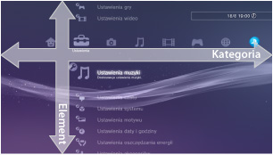
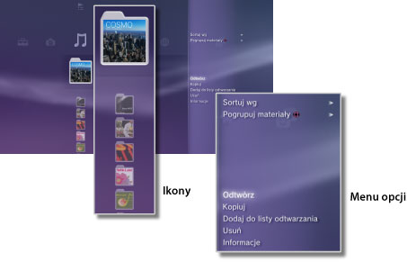
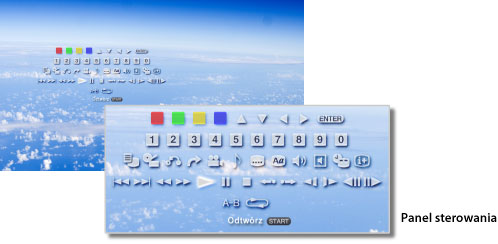

Informacje o menu XMB™ > Informacje o menu XMB™ (XrossMediaBar)
Informacje o menu XMB™ (XrossMediaBar)
Korzystanie z menu XMB™
Konsola PS3™ jest wyposażona w interfejs użytkownika o nazwie XMB™ (XrossMediaBar). W poziomym rzędzie wyświetlane są funkcje systemu w widoku kategorii, a w kolumnie pionowej wyświetlane są opcje dostępne w ramach danej kategorii.

| Przyciski kierunkowe | Wybór kategorii lub elementu. |
|---|---|
Przycisk  |
Zatwierdzanie wybranego elementu. |
Przycisk  |
Anulowanie operacji. |
Przycisk  |
Wyświetlanie menu opcji / panelu sterowania. |
| Przycisk PS | Naciśnięcie powoduje wyświetlenie menu XMB™. |
Odtwarzanie zawartości
Z menu XMB™ wybierz materiały na płycie lub nośniku danych, a następnie naciśnij przycisk . Aby zatrzymać odtwarzanie, naciśnij przycisk .
Wskazówka
W przypadku niektórych modeli konsoli PS3™ do korzystania z nośników pamięci wymagana jest odpowiednia przejściówka USB (nie dołączona do zestawu).
Panel informacyjny
Na panelu informacyjnym w prawym górnym rogu ekranu wyświetlane są informacje, takie jak liczba znajomych dostępnych online, powiadomienia o nowych wiadomościach i najnowsze informacje dostępne w obszarze [Co nowego].

(1) |
Awatar * |
|---|---|
(2) |
Liczba znajomych dostępnych online * |
(3) |
Informacja o nowym czacie tekstowym * |
(4) |
Informacja o nowych wiadomościach |
(5) |
Data i godzina |
(6) |
Ikona ładowania |
(7) |
Informacje dostępne w obszarze [Co nowego]* |
* Wyświetlane jedynie po zalogowaniu do sieci PSNSM
Korzystanie z menu opcji
Wybierz ikonę z menu XMB™, a następnie naciśnij przycisk , aby wyświetlić menu opcji. Menu opcji można wyświetlać lub ukrywać przez naciśnięcie przycisku .

Elementy menu Options (Opcje)
Elementy menu opcji różnią się w zależności od kategorii.
| Odtwórz / Rozpocznij / Obejrzyj | Odtwarzanie zawartości. |
|---|---|
| Wyjmij dysk | Wysuwanie płyty. |
| Usuń | Usuwanie zawartości. |
| Kopiuj | Kopiowanie zawartości do pamięci masowej systemu lub na nośnik pamięci.*1 |
| Informacje | Wyświetlanie informacji na temat zawartości. Niektóre informacje, takie jak nazwa, można zmieniać. |
| Dodaj do listy odtwarzania | Dodawanie materiałów do listy odtwarzania. |
| Wyświetl wszystko | Wyświetlanie wszystkich folderów zapisanych na nośniku pamięci lub w urządzeniu pamięci masowej USB.*1 |
| Sortuj wg | Sortowanie elementów zawartości według nazwy, daty itd. |
| Pogrupuj materiały | Zmiana metody grupowania na grupowanie według albumu, formatu lub innych opcji.*2 |
| Usuń kilka | Zaznaczanie wielu elementów zawartości i usuwanie ich wszystkich jednocześnie. |
| Kopiuj kilka | Zaznaczanie wielu elementów zawartości i kopiowanie ich wszystkich jednocześnie. |
| *1 |
W przypadku niektórych modeli konsoli PS3™ do korzystania z nośników pamięci wymagana jest odpowiednia przejściówka USB (nie dołączona do zestawu). |
|---|---|
| *2 |
Materiały bez informacji wymaganej opcją grupowania są grupowane w folderze [Nieznane]. Niektóre materiały mogą nie być grupowane. |
Korzystanie z panelu sterowania
Podczas odtwarzania materiału naciśnij przycisk , aby wyświetlić panel sterowania. Panel sterowania można wyświetlać lub ukrywać przez naciśnięcie przycisku . Elementy panelu sterowania różnią się w zależności od rodzaju odtwarzanej zawartości.

Korzystanie z wielu funkcji jednocześnie
Użytkownicy mogą jednocześnie korzystać z wielu funkcji. Można na przykład oglądać zdjęcia w kategorii  (Zdjęcia) lub korzystać z Internetu w kategorii
(Zdjęcia) lub korzystać z Internetu w kategorii  (Sieć), a w międzyczasie odtwarzać muzykę w kategorii
(Sieć), a w międzyczasie odtwarzać muzykę w kategorii  (Muzyka).
(Muzyka).
Przykład: Oglądanie zdjęć w kategorii (Zdjęcia) podczas odtwarzania muzyki w kategorii (Muzyka)
1. |
Odtwarzaj muzykę w kategorii |
|---|---|
2. |
Naciśnij przycisk PS. |
3. |
Wybierz zdjęcia, które chcesz obejrzeć w kategorii |
Wskazówki
- Nie można odtwarzać zawartości kategorii (Muzyka) z wykorzystaniem innych funkcji, jeżeli odtwarzana jest płyta Super Audio CD lub dla opcji
 (Ustawienia) >
(Ustawienia) >  (Ustawienia muzyki) > [Częstotliwość wyjściowa] wybrano ustawienie [44,1/88,2/176,4 kHz].
(Ustawienia muzyki) > [Częstotliwość wyjściowa] wybrano ustawienie [44,1/88,2/176,4 kHz]. - W przypadku odtwarzania niektórych rodzajów zawartości niektóre funkcje, z których zazwyczaj można korzystać w tym samym czasie, mogą być niedostępne.
Informacja
Na niektórych konsolach PS3™ nie można odtwarzać płyt Super Audio CD. Szczegółowe informacje można znaleźć w temacie [Rodzaje odtwarzanych płyt].